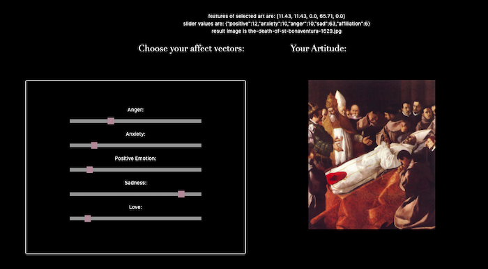
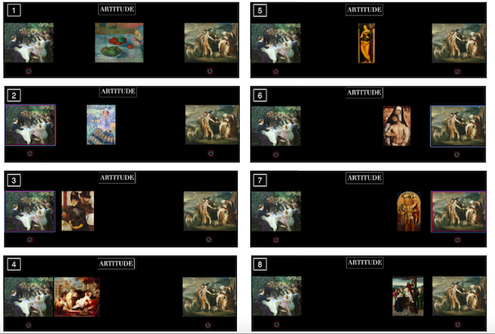
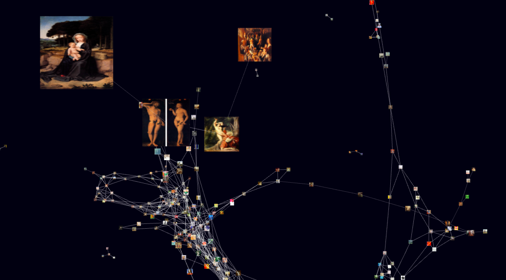

ArtAffect is an interactive web application that creates a novel engagement with art collections. In contrast with presentations that organize art by genre, medium, or style, ArtAffect lets users visually organize a database of visual art in terms of a series of affect parameters that describe the emotional content of the artworks. We present ArtAffect’s three main interaction methods, each of which provides a different type of guided navigation through the dataset. Together, these three methods act as a playful exploration mechanic that presents art in unexpected ways, showing serendipitous connections between diverse artworks within the collection. These serendipitous connections can increase a user’s feelings of engagement and excitement.
Check out our code here:
github.com/sarahmfrost/artaffect
Our Sliders interface encourages users to explore the database by manipulating five sliders that correspond to five affect qualities (love, positive emotion, anger, anxiety, sadness).

Our Gradient interface gives the user the ability to explore the affect space spanned by narrator-selected pieces of visual art.

The Galaxy interface provides a tour through a subset of art pieces.
